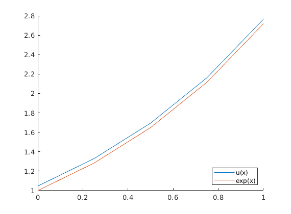
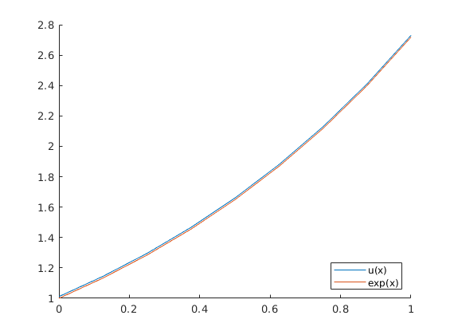

Applying the Composite Trapezoidal Rule to Fredholm Integral Equations of the Second Kind
July 1, 2019
Fredholm integral equations of the second kind are of the form:
$$u(x) = f(x) + \int_{a}^{b} K(x,t)u(t)dt$$
Given $f(x)$ and $K(x,t)$, can we find the solution for the unknown function $u(x)$? The most difficult part of this problem is evaluating the integral $\int_{a}^{b} K(x,t)u(t) dt$, which often has no analytical solution if the kernel function $K(x,t)$ is complicated. It is helpful to approach these problems numerically.
One naive approach to this problem is to try to approximate $\int_{a}^{b} K(x,t)u(t) dt$. We will solve it using the composite trapezoidal rule. Assuming a uniform grid with $n$ equal partitions and step-size $h=\frac{b-a}{n}$, the composite trapezoidal rule is as stated:
$$\int_{a}^{b} f(x)dx \approx \frac{h}{2}\left(f(x_0) + 2\sum_{i=1}^{n-1}f(x_i) + f(x_n)\right)$$
where $x_i \in [a,b]$ for $i = 0, 1, \dots, n$. When we apply the composite trapezoidal rule to our integral, we get
$$\int_{a}^{b}K(x, t)u(t)dt = \frac{h}{2}\left(K(x, x_0)u(x_0) + 2\sum_{i=1}^{n-1}K(x, x_i)u(x_i) + K(x, x_n)u(x_n)\right)$$
By substituting this information into our original equation, we can define $u(x)$ in the following way:
$$u(x) = f(x) + \frac{h}{2}\left(K(x, x_0)u(x_0) + 2\sum_{i=1}^{n-1}K(x, x_i)u(x_i) + K(x, x_n)u(x_n)\right)$$
When we evaluate $u(x)$ at all the evenly spaced nodes $x_0, x_1, \dots , x_n \in [a,b]$, we can construct the system of equations:
$$\begin{aligned}
u(x_0) &= f(x_0) + \frac{h}{2}\left(K(x_0, x_0)u(x_0) + 2\sum_{i=1}^{n-1}K(x_0, x_i)u(x_i) + K(x_0, x_n)u(x_n)\right) \\
u(x_1) &= f(x_1) + \frac{h}{2}\left(K(x_1, x_0)u(x_0) + 2\sum_{i=1}^{n-1}K(x_1, x_i)u(x_i) + K(x_1, x_n)u(x_n)\right) \\
&\vdots \\
u(x_{n-1}) &= f(x_{n-1}) + \frac{h}{2}\left(K(x_{n-1}, x_0)u(x_0) + 2\sum_{i=1}^{n-1}K(x_{n-1}, x_i)u(x_i) + K(x_{n-1}, x_n)u(x_n)\right) \\
u(x_n) &= f(x_n) + \frac{h}{2}\left(K(x_n, x_0)u(x_0) + 2\sum_{i=1}^{n-1}K(x_n, x_i)u(x_i) + K(x_n, x_n)u(x_n)\right) \\
\end{aligned}$$
Solving this system yields the values for $u(x_0), u(x_1),\dots,u(x_n)$. The matrix form of this system looks like
$$
\left(I_{n+1} -
\frac{h}{2}\begin{bmatrix}
K(x_0, x_0) & 2K(x_0, x_1) & \cdots & 2K(x_0, x_{n-1}) & K(x_0, x_n) \\
K(x_1, x_0) & 2K(x_1, x_1) & \cdots & 2K(x_1, x_{n-1}) & K(x_1, x_n) \\
\vdots & \vdots & \ddots & \vdots & \vdots \\
K(x_{n-1}, x_0) & 2K(x_{n-1}, x_1) & \cdots & 2K(x_{n-1}, x_{n-1}) & K(x_{n-1}, x_n) \\
K(x_n, x_0) & 2K(x_n, x_1) & \cdots & 2K(x_n, x_{n-1}) & K(x_n, x_n)
\end{bmatrix}\right)
\begin{bmatrix}
u(x_0) \\
u(x_1) \\
\vdots \\
u(x_{n-1}) \\
u(x_n)
\end{bmatrix}
=
\begin{bmatrix}
f(x_0) \\
f(x_1) \\
\vdots \\
f(x_{n-1}) \\
f(x_n)
\end{bmatrix}$$
where $I_{n+1}$ is the identity matrix of size $n+1$.
Let's try this on an example problem. Let $u(x) = e^x-1+\int_{0}^{1}tu(t)dt$ where $f(x) = e^x-1$ and $K(x,t)=t$. The exact solution to this equation is $u(x)=e^x$
1. Let's use $n=4$ intervals with a step-size of $h=\frac{1}{4}$. Our set of nodes will then be $\{ 0, \frac{1}{4}, \frac{1}{2}, \frac{3}{4}, 1 \}$. The matrix equation is
$$
\begin{pmatrix}I_5 -
\frac{1}{8}\begin{bmatrix}
0 & 0.5 & 1 & 1.5 & 1\\
0 & 0.5 & 1 & 1.5 & 1\\
0 & 0.5 & 1 & 1.5 & 1\\
0 & 0.5 & 1 & 1.5 & 1\\
0 & 0.5 & 1 & 1.5 & 1
\end{bmatrix}
\end{pmatrix}
\begin{bmatrix}u(0)\\ u(0.25)\\ u(0.5)\\ u(0.75)\\ u(1)\end{bmatrix} =
\begin{bmatrix}0\\ e^{0.25}-1\\ e^{0.5}-1\\ e^{0.75}-1\\ e-1\end{bmatrix}
$$
MATLAB spits out
u(0) |
1.0461 |
u(0.25) |
1.3302 |
u(0.5) |
1.6949 |
u(0.75) |
2.1631 |
u(1) |
2.7644 |
Let's look at a plot of our approximation versus the exact solution:

It looks okay. We can see that there is some error when we only use $4$ intervals. Let's see if we can do better when $n=8$:

The error is much smaller, which should make sense because the composite trapezoidal rule has error of order $O(h^3)$. So when we double our steps-size, our error is $\frac{1}{8}$ed.
1. Avazzadeh, Z., et al. “Numerical Solution of Fredholm Integral Equations of the Second Kind by Using Integral Mean Value Theorem.” Applied Mathematical Modelling, vol. 35, no. 5, May 2011, pp. 2374–2383.↩